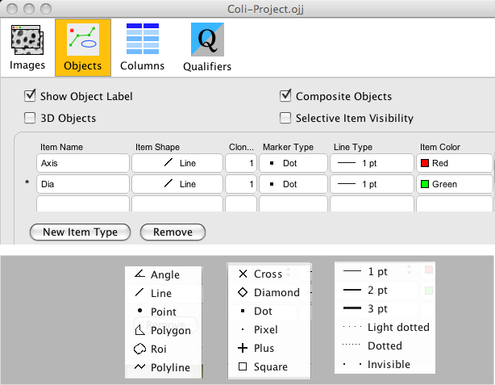

- Use the "Objects" panel to define name, shape, max. number, marker type ,
line type and color of individual item types.
- "Show Object Label" shows the index number of an object close to the
object's first point. If an object extends over several slices, the label is
only displayed in the home slice of the first point.
- "Composite Objects" allows several items (a mixture of same or different types)
to be encapsulated in a single object. This only affects future marking, not existing objects.
- "3D Objects" should be set if an object should extend over several slices or
hyperstack channels. In most cases, 3D is switched off.
- "Selective Item visibility" will paint little "eyes" into the ObjectJ
Tools window. These can be used to control visibility per item type
- "Remove" will remove the selected item (the one marked with an asterisk).
Take care: removing also removes all objects that contain such an item; there is no Undo.